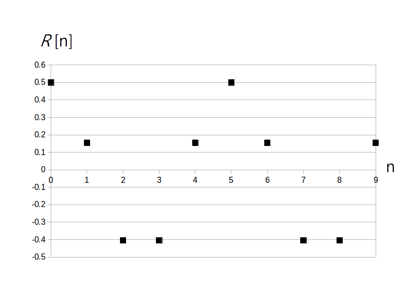

前ページで(標本)自己相関関数 $R[n]$ の値が相対的に大きい値の時、$f[i]$ とそこから時刻 $n$ だけ遅延させた $f[i+n]$ の間には強い相関があると説明しました。
また $f[i]$ は定常な確率過程の信号と仮定しましたので $R[n]$ の値は時刻 $i$ に寄らず遅延時刻 $n$ だけで決まります。
さらに $R[0]$ は常に最大値で信号の平均パワーを示しています。
このことから
という結論が導かれます。
ちなみに通常 $f[i]$ には雑音が含まれるので $R[n]$、・・・ と $R[0]$ の値が完全に一致することは稀なのですが、もしこれらの値が一致した場合は、信号は確実に周期 $n$ の周期性信号で、かつ雑音が含まれていないことを意味します。
例えば前ページで雑音を含んでいない周期 5 のサイン波の例を挙げましたが、$R[0] = R[5] = 1/2$ となっていました。
そこでここでは例として周期 5 のディジタル信号
\[ f[i] = 3 + 1 \cdot \sin( 2\pi /5 \cdot i ) + 2 \cdot \cos( 2\pi /(5.0/3.0) \cdot i ) \]に雑音として標準正規乱数 N(0, 1) を各時刻で加えつつ N=10000 点生成した信号を考えます。
まず、雑音を加える前の信号は以下の図1です。
確かに周期 5 の信号となっている事が分かります。
そして雑音を加えて実際に得られた信号が図2です。

この信号の自己相関関数のグラフを図3に示します。

この様に、一見すると周期的に見えない信号でも自己相関関数を計算してみたら $R[5]$、$R[10]$、$R[15]$ の値が $R[0]$ に近く、他の自己相関関数値は相対的に小さかったので、雑音を加えてない元の信号が周期 5 の周期性信号である(可能性が高い)事が分かりました。